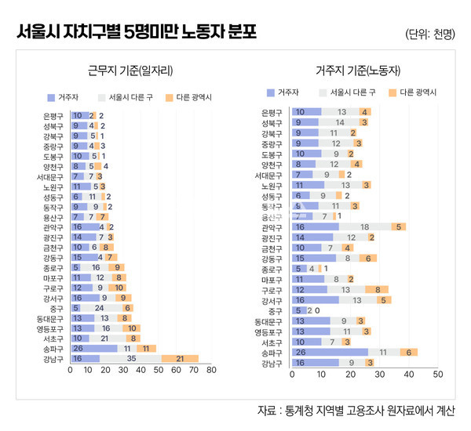

박영삼의 통계로 보는 노동
서울시 5명 미만 사업장 노동자, 4명 중 1명 강남 3구에서 일한다
지역별 고용조사 기초구 단위 분석 … 강남·송파·서초·영등포·동대문 순
5명 미만 사업장에 종사하는 노동자들은 연차휴가와 연장근로수당 등 근로기준법의 핵심 조항을 적용받지 못하고 있다. 최저임금과 주휴수당, 사회보험 가입 등 법으로 보장된 권리조차 제대로 누리지 못하는 경우가 많다.
사업주가 영세하고 지불능력이 취약하며, 정부의 근로감독이 제대로 미치기 어렵다는 이유를 많이 들고 있다. 개인들이 운영하는 농림어업과 비사업체, 비공식 부문에 5명 미만 사업장이 다수 분포하고 있다는 것도 법적용을 어렵게 하는 이유로 덧붙이곤 한다.
비공식 부문 비중 높아 근로기준법 적용 어렵다?
2022년 상반기 통계청의 지역별 고용조사 조사 결과를 보면, 광역시·도 기준으로 5명 미만 노동자 비율이 제주가 24.2%로 가장 높다. 이어 강원(21.8%)·대구(21.0%)·전북(20.3%) 순이다. 농업과 숙박음식업 등을 중심으로 한 개인서비스업 종사자가 많은 비중을 차지하는 지역이다. 반면 5명 미만 노동자 비율이 가장 낮은 지역은 세종(12.9%)이다. 충남(14.9%)·서울(15.2%)·울산(15.7%) 순서로 뒤를 이었다. 이들 지역에는 행정부와 공공기관, 대기업 본사와 대공장들이 다수 포진하고 있다. 이 결과만 놓고 보면 5명 미만 사업장 다수에 근로기준법을 적용하기 어렵다는 주장에 설득력이 있을 수 있다.
하지만 5명 미만 사업장 노동자의 ’지역 내 비율’은 전체적인 사실을 이해하는 데 큰 도움을 주지 못한다. 사업체 일자리의 지역 간 편중이 심한 상황에서, 겉으로는 5명 미만 사업장 비율이 낮게 나타나는 대도시 인구밀집 지역에 5명 미만 사업장 일자리의 ’절대적인 규모’가 함께 분포하고 있기 때문이다. 아래 <그림1>에서 보듯이 5명 미만 사업장 비율이 제일 높은 제주도의 해당 사업장 노동자는 불과 6만3천명에 그치는 반면, 서울과 경기·인천은 각각 75만3천명, 97만5천명, 20만5천명에 달한다. 이를 모두 합하면 193만3천명으로 우리나라 전체 5명 미만 사업장 노동자의 절반을 넘는 51.7%를 차지한다. 말하자면 좋은 일자리, 많은 일자리가 있는 곳에 5명 미만 일자리도 함께 있는 것이다.

통계청의 지역별 고용조사는 시·군·구 단위까지 고용현황을 파악할 수 있도록 가구조사로는 가장 큰 규모인 20만 가구표본을 구축하고 있다. 하지만 표본이 충분히 큰 규모임에도 사업장 규모 변수를 제공하지 않다가 2021년부터 일반 시·군과 함께 특별·광역시의 구단위까지 제공하게 됐다. 이로써 서울을 비롯한 모든 광역시의 각 구별로 5명 미만 사업장 노동자의 규모를 파악할 수 있게 됐다. 5명 미만 사업장의 노동자가 어디에 살고 어디에 근무하는지, 근무지와 거주지를 구분해서 살펴볼 수 있게 됐다.
그렇다면 서울시에서 일하는 5명 미만 사업장의 노동자들은 실제로 어디에서 일하고 어떤 지역에서 살고 있을까? 근무지와 거주지의 자치구가 같은 경우가 있을 수 있고, 근무지와 거주지는 다르지만 서울시 안에 있는 경우, 거주지가 다른 광역시도인 사례도 있을 수 있다.
강남은 ‘내부 유입형’, 강북 교외지역은 ‘외부 유출형’
우선 서울시에서 근무지 기준으로 5명 미만 사업장에서 일하는 노동자가 가장 많은 구는 강남구(7만2천명), 송파구(4만8천명), 서초구(3만9천명) 순이다. 전체 일자리가 이들 지역에 많이 있기도 하지만 5명 미만 사업장도 이 지역에 가장 많기 때문이다. 강남 3구의 5명 미만 사업장 노동자를 모두 합치면 15만9천명으로 서울시 전체 5명 미만 노동자 67만8천명의 23.4%에 해당한다.
하지만 이들 강남 3구 지역의 노동자들 가운데 근무지와 거주지가 같은 노동자, 즉 강남에 거주하면서 이 지역의 5명 미만 사업장으로 출근하는 노동자는 5만2천명에 불과하다. 서울의 다른 구나 경기와 인천 등 다른 광역시도에서 원거리 출·퇴근으로 유입되는 노동자가 10만7천명에 이른다. 특히 강남구와 서초구는 다른 지역 거주자들인 5명 미만 노동자를 고용하면서 거주자들이 다른 외부지역의 5명 미만 사업장으로 일하러 가는 비율은 매우 낮은 ’내부유입형’이다. 동시에 ’일자리가 많은 중심지’로서의 특징을 전형적으로 보여준다. 송파구는 강남 3구 중에서는 상대적으로 외부거주자 유입도 많고 내부거주자의 지역 내 5명 미만 사업장 근무자 비중도 높은 ’외부유입+거주자취업’이 혼합된 형태이다.
다음으로 영등포구와 동대문구·중구는 비강남 지역 가운데 일자리 중심지로서 타지역에서 출근하는 비중이 높은 ’외부유입형’이다. 영등포구와 동대문구의 경우 5명 미만 노동자가 각각 3만9천명에 이르지만 거주자는 1만명에 불과하고, 나머지는 다른 지역에서 유입되고 있다.
강서·구로·마포 지역은 외부에서 유입되는 노동자도 많고 해당 지역에서 외부지역으로 나가는 숫자도 많은 ’유입유출 혼합형’에 해당한다. 다만 중구의 경우 5명 미만 사업장 노동자 중 외 부유입자가 82%나 된다. 종로도 대부분 외부유입형으로 메우고 거주자의 외부유출은 거의 없는 유형에 속한다. 중구와 종로 지역은 거주자 비중이 낮은 일자리 중심지역이다.
다음으로 강남 3구와 정반대 유형으로 전체 일자리가 부족하고 다른 지역의 5명 미만 사업장 일자리에 거주자들이 많이 취업하는 지역으로 은평·성북·강북·중랑·도봉과 같은 지역이 있다. 이들 지역은 내부에 있는 5명 미만 사업장 일자리에 거주자들이 취업하는 비중이 높고 다른 지역의 5명 미만 사업장 일자리로 출근하는 비율도 높은 ’고용유출형’에 해당한다. 끝으로 양천·서대문·노원·성동·동작구는 5명 미만 사업장 일자리에 거주자와 외부유입이 비슷한 정도로 이뤄지고 ,다른 지역의 5명 미만 사업장 일자리로 출근하는 비중도 높은 중간혼합형 유형이다.
취약노동자, 일자리 중심지대에 몰려
이렇게 보면 서울시의 5명 미만 일자리는 서울시와 다른 수도권 광역시·도의 노동자들까지 유입시키는 강남 3구와 영등포·동대문·중구에 이르는 내부유입형, 강서·구로·마포·종로 지역의 혼합형까지 포함하면 약 60% 가까이 차지하게 된다. 5명 미만 일자리의 약 절반 이상이 수도권에 분포하고, 또 그 수도권 일자리의 절반 이상이 고용 상황이 괜찮은 지역에 집중 분포하고 있다고 볼 수 있다. 즉, 5명 미만 일자리의 대부분은 일자리 중심지대에 존재하고 있다고 볼 수 있다.

그렇지만 상당수 5명 미만 사업장 노동자들의 근로조건은 열악하다. 월평균 임금 수준을 보면 강남 3구를 중심으로 내부유입형에 해당하는 지역은 210만~260만원 수준이고, 그 다음으로 혼합형 지역이 190만~210만원 수준, 외부유출형이 200만원 미만의 분포를 보이고 있다. 서울시의 5명 미만 전체 월평균임금은 218만원 수준으로 서울시의 333만원과 전국 293만원 수준에 비해 65~74% 수준에 불과하다. 올해 기준 월환산 최저임금액 201만원 대비로는 108% 수준에 머물고 있다.
5명 미만 사업장 노동자들은 도시 주변부의 비공식 부문에서 일하는 것이 아니라 수도권의 일자리 중심부에 집중 분포하고 있다. 사업주의 어려움이 지속되고 근로감독 행정이 못 미칠 정도로 먼 곳에 있는 것이 아니라는 이야기다. 우선은 있는 법이라도 제대로 지키도록 하는 것이 필요하다. 그리고 2년째 실질가치가 하락하고 있는 최저임금을 이번에라도 충분히 인상하는 것이 가장 빠르고 확실한 조치가 될 것이다.
고려대 노동문제연구소 노동데이터센터장 (youngsampk@gmail.com)